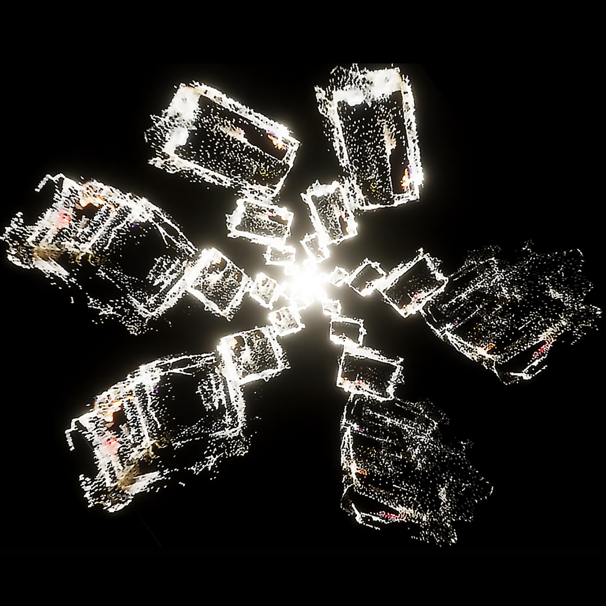
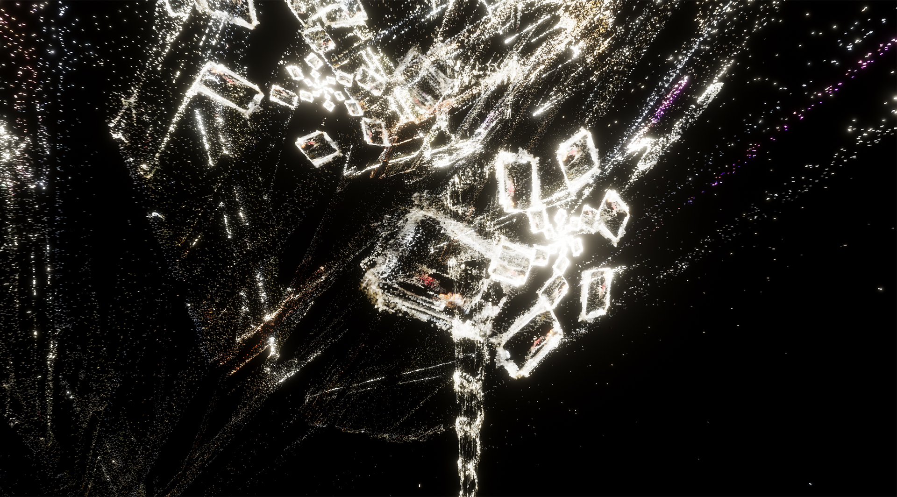
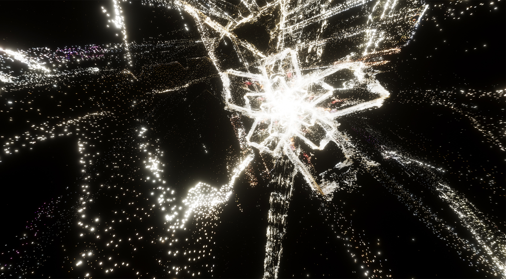
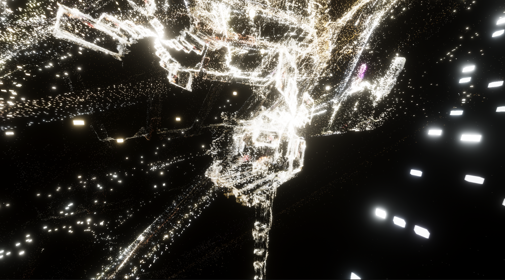
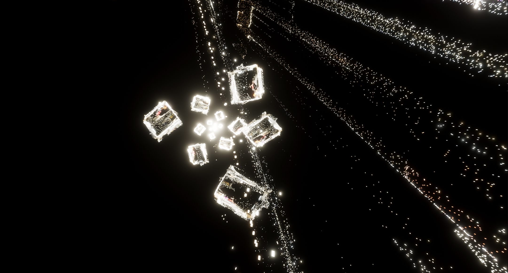
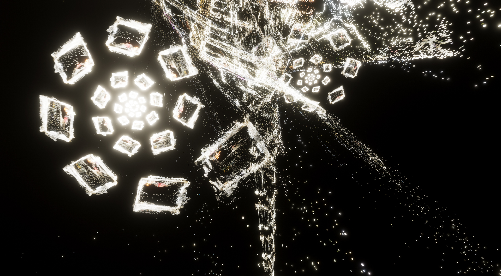
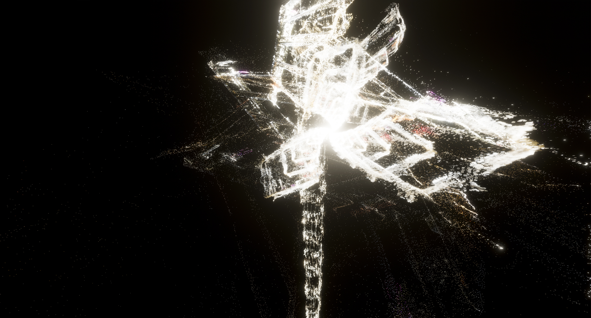

Fractals
2024
Interactive Installation
Fractals is an interactive installation featuring a projected digital simulation created from 3D scans of the environment in which the work is presented. The scans are transformed into particles that move, rotate, and reorganise into abstract geometric forms.
The system uses Kinect body tracking and microphone input to respond to the viewer’s position, proximity, and surrounding sound. These inputs influence six interconnected parameters within Unity’s VFX Graph, controlling aspects of the particles’ movement, speed, rotation, and force. Each parameter affects the others, creating a chain reaction in which even a small change can transform the behaviour of the entire system.
The work explores how small, often unnoticed actions can influence a complex system, producing unpredictable visual outcomes through the interaction between the viewer, sound, and digital environment.
Software: Unity, Blender
Imputs: Kinect body tracking, microphone






